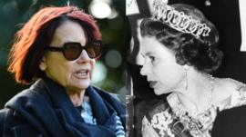

Technology
Huawaei 5G kit must be removed from UK by 2027
Top Stories
Trump signs order targeting China over Hong Kong
The president says he has also signed a bill to impose sanctions on Chinese officials over Hong Kong.
 2 hours ago
2 hours ago
UK bans China's Huawei from 5G networks
8 hours ago
Hong Kong reduces gatherings from 50 to four
2 hours ago
The UK's mobile providers are being banned from buying new Huawei 5G equipment after 31 December, and they must also remove all the Chinese firm's 5G kit from their networks by 2027.
Digital Secretary Oliver Dowden told the House of Commons of the decision.
It follows sanctions imposed by Washington, which claims the firm poses a national security threat - something Huawei denies.
Mr Dowden said the move would delay the country's 5G rollout by a year.
The technology promises faster internet speeds and the capacity to support more wireless devices, which should be a boon to everything from mobile gaming to higher-quality video streams, and even in time driverless cars that talk to each other. 5G connections are already available in dozens of UK cities and towns, but coverage can be sparse.
Mr Dowden added that the cumulative cost of the moves when coupled with earlier restrictions announced against Huawei would be up to £2bn.
"This has not been an easy decision, but it is the right one for the UK telecoms networks, for our national security and our economy, both now and indeed in the long run," he said.
Features
What is Huawei and why is it being banned?
Inside South Africa's 'hospitals of horrors'
The historian, the Queen and the secret letters